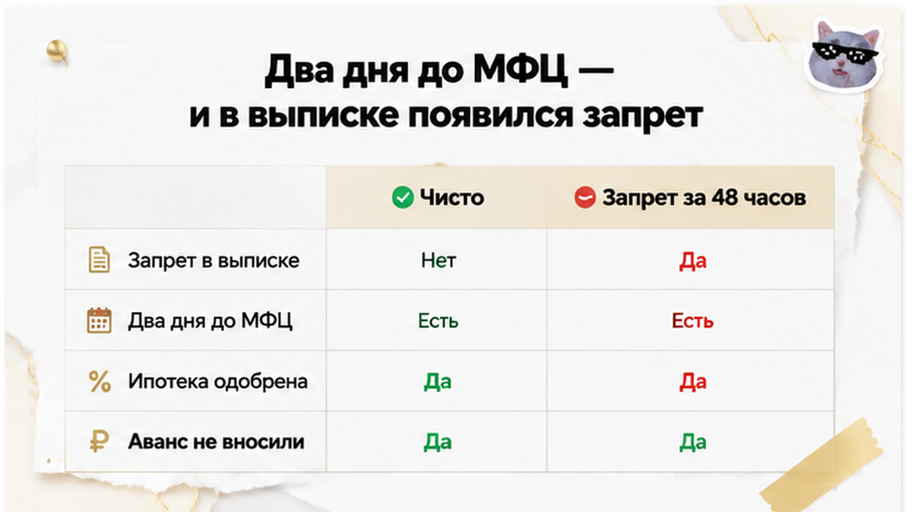
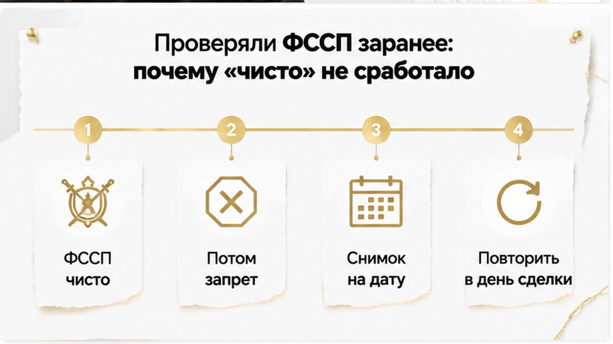
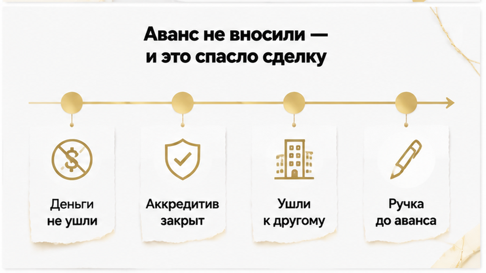
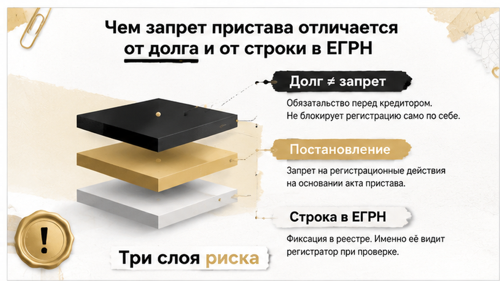
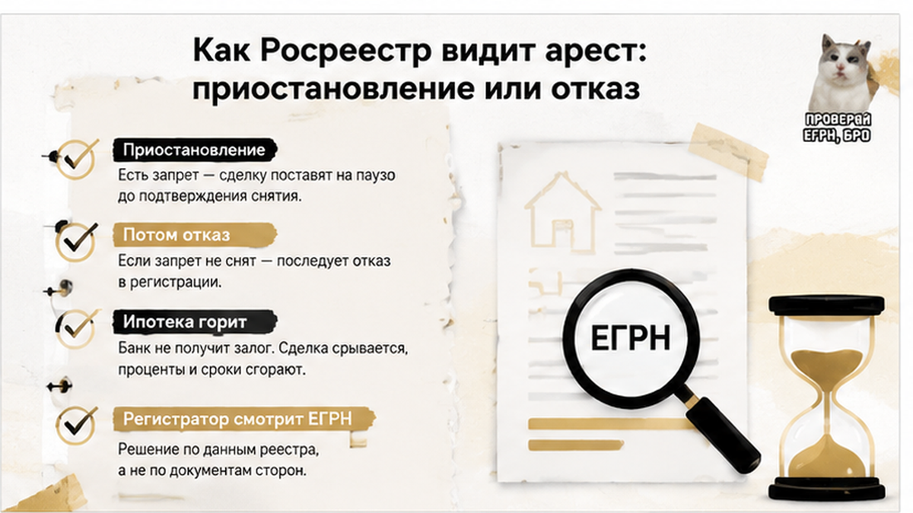
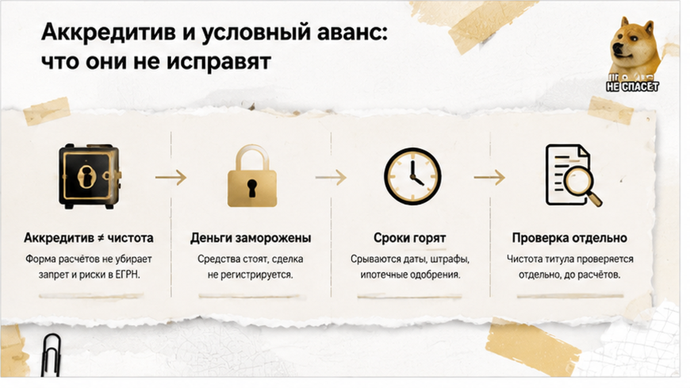

Дата подачи в МФЦ уже стояла в календаре у обеих сторон. Квартира выбрана, торг закрыт, ипотека одобрена, полис оплачен, продавец адекватный. За два дня до подачи покупатели заказали свежую выписку ЕГРН — не потому, что заподозрили неладное, а по привычке, чтобы закрыть вопрос. И увидели в разделе ограничений строку: запрет на регистрационные действия, основание — постановление судебного пристава. Сделка встала за сорок восемь часов до финиша. Спасло людей ровно одно обстоятельство: они ещё не отдали продавцу ни рубля.
История тюменская и до тошноты обычная — поэтому я её и разбираю. Покупатели делали всё «как советуют в интернете»: пробили продавца по базе приставов, посмотрели выписку, получили одобрение банка, согласовали дату. Через несколько недель, уже на финишной прямой, картинка изменилась — и никто их об этом не уведомил. Аванс к тому моменту не был передан, поэтому история закончилась потерей трёх недель и одного понравившегося варианта, а не потерей денег и года жизни в судах.
Разбираю такие ситуации по шагам в Telegram: t.me/Tyumen_Rieltor — и в MAX: max.ru/id561413315447_biz. Пишите до аванса, а не после.

Сделку готовили спокойно, без гонки. Объект смотрели дважды, торг закрыли, банк выдал одобрение, страховая посчитала полис, дату подачи согласовали и с продавцом, и с ипотечным менеджером. Оставалось подписать договор и отнести пакет в МФЦ — то есть та самая часть, где обычно уже никто не нервничает.
Свежую выписку заказали перед самой подачей. В разделе с ограничениями стояла запись о запрете на совершение регистрационных действий. Основание — постановление судебного пристава-исполнителя в рамках исполнительного производства в отношении собственника квартиры.
Продавец о запрете не знал. И это не фигура речи в духе «скрывал, но мы вывели на чистую воду» — он действительно не знал. Постановление приставу положено направить должнику, но люди годами не заглядывают в почтовый ящик, живут не по прописке, не читают уведомления на «Госуслугах». Человек платит за квартиру, планирует переезд, показывает вам кухню — и не догадывается, что его недвижимость уже нельзя перерегистрировать.
Тут важно понимать механику, иначе история читается как случайность. Запрет не берётся из воздуха и не появляется от самого факта долга. Он появляется, когда производство дошло до конкретной стадии: пристав вынес постановление об аресте или запрете регистрационных действий по статье 80 Федерального закона № 229-ФЗ «Об исполнительном производстве», а Росреестр внёс запись в ЕГРН. До этой минуты долг существует, а объект технически чистый — и любая ваша проверка честно покажет вам именно эту чистоту.

Покупатели действительно смотрели продавца в банке данных исполнительных производств на fssp.gov.ru. На тот момент по нему не отображалось ничего. Это не халатность и не невезение. Это неправильное понимание того, что вообще даёт такая проверка.
Проверка по базе ФССП — снимок на момент запроса. Не справка о добросовестности, не гарантия, не допуск к сделке. Вы фотографируете состояние дел на конкретную минуту конкретного дня. Через неделю кадр другой: кредитор подал в суд, суд вынес решение, взыскатель отнёс исполнительный лист приставу, пристав возбудил производство и применил обеспечительные меры. Между «чисто» и «запрет в ЕГРН» может пройти месяц. А может и меньше.
Второй момент — как устроен поиск. Он идёт по фамилии, имени, отчеству и дате рождения. Полные однофамильцы, ошибки в написании, свежие производства, которые ещё не выгружены в открытую часть базы, — всё это зазоры, в которые проваливается ваша уверенность. И главное: база отвечает, есть ли у человека производства, но не показывает, какие меры по ним приняты в отношении вот этой квартиры.
Третье — самое неудобное. ФССП и ЕГРН рассказывают о разных вещах и в разном темпе. ФССП отвечает на вопрос «есть ли у человека исполнительные производства». ЕГРН отвечает на вопрос «есть ли ограничения на этом объекте». Ответы не совпадают ни по времени, ни по содержанию, и одна база вместо двух — это половина картины. Ровно так же одна строка в реестре ломает уже одобренную ипотеку: я разбирал случай, когда банк дал добро, а регистрацию остановила запись в ЕГРН.

А теперь то, ради чего эту историю вообще стоит дочитывать. К моменту, когда всплыл запрет, покупатели не передали продавцу ни рубля. Аванс не вносили, задаток не оформляли, расписок не писали. Кредитные средства банк не выдавал, аккредитив не открывали, ячейку не закладывали.
Поэтому решение заняло один вечер, а не полгода. Стороны подписали соглашение о том, что сделка не состоится по причине ограничения, зафиксировали, что финансовых обязательств друг перед другом нет, и разошлись. Покупатели потеряли около трёх недель на подбор и подготовку, деньги за оценку объекта и немного нервов. Продавец потерял покупателя и получил крайне неприятное открытие про собственное исполнительное производство.
Через две недели пара вышла на другой объект и спокойно его купила — с тем же одобрением банка, которое ещё действовало. Никакого героизма. Просто на момент плохой новости у них не было денег в чужих руках.
Теперь сравните с обратным сценарием. Если аванс передан, начинается долгий разговор о том, чей это риск и по чьей вине всё сорвалось. В договоре аванса обычно прописан возврат при невозможности сделки не по вине покупателя — формулировка красивая. Только получить деньги обратно от человека, у которого уже есть исполнительное производство, — задача отдельная и невесёлая: счета могут быть под взысканием, и ваши деньги просто не дойдут до вас. Как это выглядит вживую, я показывал в разборе, где расписку написали, а денег на счёте не оказалось.
Точка «до аванса» — единственное место в сделке, где выход стоит ноль рублей. Дальше любая остановка превращается в переговоры, а потом в иск. Похожая развилка была в тюменской истории, где продажу удалось остановить до передачи денег, — и именно поэтому она закончилась без суда.
Если сегодня в ФССП чисто — вносите аванс до регистрации или ждёте финальной проверки в день сделки? Напишите в комментариях, как было у вас: мне правда интересно, сколько людей проверяют объект дважды, а сколько считают это паранойей.

После той истории пара спросила прямо: «Мы же смотрели ФССП. Как база может показывать чисто, если у человека долг?» Ответ простой и неприятный: долг, постановление пристава и запись в ЕГРН — три разных слоя, и каждый живёт по своему расписанию.
Первый слой — сам долг. Человек может годами быть должен по исполнительному производству, и его квартира при этом свободно продаётся. Долг сам по себе ничего не блокирует. Он становится вашей проблемой только тогда, когда пристав решает применить меру.
Второй слой — постановление. Статья 80 закона 229-ФЗ даёт приставу право наложить арест или запрет на регистрационные действия с имуществом должника. Это отдельное решение, отдельный документ, отдельная дата. Пристав может вынести его через неделю после возбуждения производства, а может через год — по накопившейся сумме, по жалобе взыскателя, по внутреннему плану работы. Предсказать этот момент со стороны покупателя невозможно.
Третий слой — запись в ЕГРН. Постановление уходит по межведомственному каналу в Росреестр, там его отрабатывают и вешают на объект ограничение. Останавливает сделку именно эта строка. Не долг. Не гнев взыскателя. Строка.
Между вторым и третьим слоем есть окно — от нескольких часов до нескольких дней. В нашем случае оно закрылось ровно за двое суток до МФЦ. Мы увидели результат только потому, что заказали выписку заново. Понадеялись бы на старый документ — узнали бы всё от регистратора, уже с деньгами в схеме.
Работает это в обе стороны: в ФССП тишина, а запись в ЕГРН висит — снятие никто не довёл до конца. Ограничение в ЕГРН — не только от пристава: там же ипотека и судебный запрет. Я разбирал, как ипотеку одобрили, а регистрацию остановила строка в ЕГРН — причина другая, результат тот же.

У покупателей почти всегда есть тихая надежда: регистратор посмотрит и войдёт в положение. Поймёт, что долг небольшой, что продавец уже собирается платить, что у людей ипотека горит и переезд назначен. Не войдёт. Регистратор смотрит не в положение, а в карточку объекта. Там либо чисто, либо ограничение. При ограничении переход права не регистрируют — это не строгость и не оценочное суждение, это техническая невозможность.
Сначала приходит приостановление. Уведомление, причина, срок на устранение. Срок исчисляется месяцами, и именно здесь людей подводит арифметика: кажется, что месяц — это запас. Месяц — это ничто, когда рядом с вами тикает сразу несколько таймеров.
Горит одобрение ипотеки, срок аккредитива, оценка объекта. Приостановление на месяц разбирает всю конструкцию — даже если запрет в итоге снимут.
Не устранили причину в срок — приостановление превращается в отказ. Новые заявления, новая пошлина, часто и новое одобрение кредита.
Если сделка на подходе и вы не уверены, что видите объект целиком, — напишите мне до того, как согласуете дату МФЦ. Проверю ФССП, ЕГРН, банкротство и залоги, скажу, где тонко.
Главный вывод из тюменской истории я formулирую одной фразой: проверка — это не документ, а дата. Любая выписка, любой скриншот из базы приставов — снимок на конкретную минуту. Через час картина может стать другой, и никто вам об этом не позвонит.
Поэтому проверок в нормальной сделке минимум три: перед авансом, накануне подачи документов и после регистрации — уже на себя. Вот что я смотрю в день сделки, прежде чем ехать в МФЦ.
Смотреть нужно и ФССП, и ЕГРН — как раз потому, что они рассинхронизированы. ФССП покажет производство, которое до Росреестра ещё не доехало. ЕГРН покажет запись, которая осталась висеть после закрытого производства. Одна база вместо двух — это половина картины, а половина картины в сделке хуже, чем отсутствие картины: она успокаивает.
И отдельно про интервал. Чем короче промежуток между финальной проверкой и подачей документов, тем меньше шансов угодить в то самое окно. Проверка за неделю до МФЦ успокаивает, но не защищает. Проверка утром того же дня — защищает.

После той истории пара задала мне вопрос, который я слышу почти на каждой сделке: «Мы же не наличкой платим. Деньги лежат в банке, раскрываются после регистрации. Разве это не защита?»
Аккредитив закрывает один риск: продавец не получит деньги до регистрации. Но он не снимает запрет пристава и не заставляет Росреестр зарегистрировать переход. Пока сделка стоит, горят срок одобрения ипотеки, оценки и комиссия банка.
Аванс «с условием возврата» на бумаге звучит убедительно, но возврат зависит от того, есть ли у продавца чем платить — см. историю с распиской без денег на счёте. Аккредитив — инструмент расчёта, не проверки.
«Я завтра оплачу, и всё снимется». Продавец говорит это искренне — он правда так думает. Проблема в том, что снятие запрета не одно действие, а цепочка, и каждое звено в ней живёт по своим часам, а не по вашей дате в МФЦ.
Продавцу в той тюменской истории назвали ориентир: две-шесть недель. Подчеркну — ориентир по его конкретной ситуации, а не норматив и не обещание. Бывает быстрее. Бывает заметно дольше: если производств несколько, если часть суммы оспаривается, если платёж ушёл по старым реквизитам и его ещё нужно разыскать.
Исполнительский сбор живёт отдельно: долг гасят, а производство остаётся открытым — запрет висит. Для покупателя условие простое: выходим на подписание только после свежей выписки ЕГРН без ограничений.
А вы бы ждали снятия запрета две-шесть недель — или в тот же вечер пошли бы смотреть другие варианты? Напишите в комментариях: мне правда интересно, кто готов держать одобрение и нервы под чужой долг, а кто уходит сразу.
Главная ошибка, из-за которой пара чуть не осталась без денег, — считать, что проверка бывает одна. Их четыре, они независимы, и у каждой своя слепая зона. Ни одна не закрывает остальные.
| Проверка | Где смотрим | Что реально видно | Слепая зона | Когда повторять |
|---|---|---|---|---|
| Долги и производства | Банк данных ФССП, fssp.gov.ru | Открытые исполнительные производства на человека, суммы, предмет взыскания | Не показывает, наложен ли запрет на конкретную квартиру; данные — снимок на момент запроса | На старте, за 5–7 дней до сделки и утром дня сделки |
| Ограничения на объекте | Выписка из ЕГРН | Аресты, запреты регдействий, ипотека, аренда, притязания третьих лиц | Не объясняет причину и не говорит, когда запись снимут; обновляется с задержкой после решения пристава | Свежая выписка в день подачи документов, заказанная покупателем |
| Банкротство продавца | Единый федеральный реестр сведений о банкротстве, картотека арбитражных дел | Поданные заявления, введённые процедуры, финансовый управляющий | ФССП и ЕГРН могут выглядеть чисто, пока дело только принято к производству | Перед авансом и перед подписанием договора |
| Ипотека и залог | ЕГРН плюс справка банка-залогодержателя | Действующий залог, остаток долга, порядок снятия обременения | Сроки снятия зависят от банка; «письмо об остатке» не равно снятой записи | При выходе на сделку и повторно перед МФЦ |
Читать её просто. ФССП отвечает на вопрос «есть ли у человека проблемы». ЕГРН — «дошли ли эти проблемы до квартиры». Между двумя ответами и живёт зазор в те самые сорок восемь часов. А банкротство и залог — вообще отдельные сюжеты, которые в первых двух источниках могут не отразиться никак.
И ещё одно наблюдение из тюменской практики: покупатели проверяют продавца по паспорту и на этом успокаиваются, хотя проверять надо и объект. Если квартира недавно перепродавалась или в ней двигали стены, к списку добавляются свои пункты — например, чтобы не повторить историю, где квартиру с открытой кухней не смогли зарегистрировать. Набор проверок собирается под конкретный объект, а не по универсальному чек-листу из интернета.
Сомневаетесь, что видите объект целиком? Напишите мне до внесения аванса — разберём продавца и квартиру по источникам, а не по обещаниям на просмотре.
Telegram: @Tyumen_Rieltor · MAX: написать в MAX
Эта пара не потеряла ни рубля — потому что в момент плохой новости деньги были у них, а не в чужих руках. Вторичка в Тюмени покупается нормально: опасно не наличие рисков, а привычка отдавать деньги раньше, чем закончилась проверка. Держите ручку до последнего — и не как в истории, где расписку написали, а денег на счёте не оказалось.
Материал проверен: Святослав Шакин, личный риэлтор в Тюмени. Ориентир для покупателя, не индивидуальная юридическая консультация.